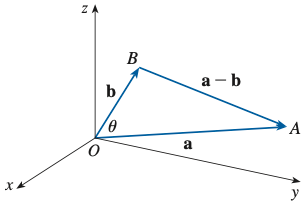
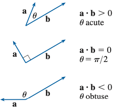
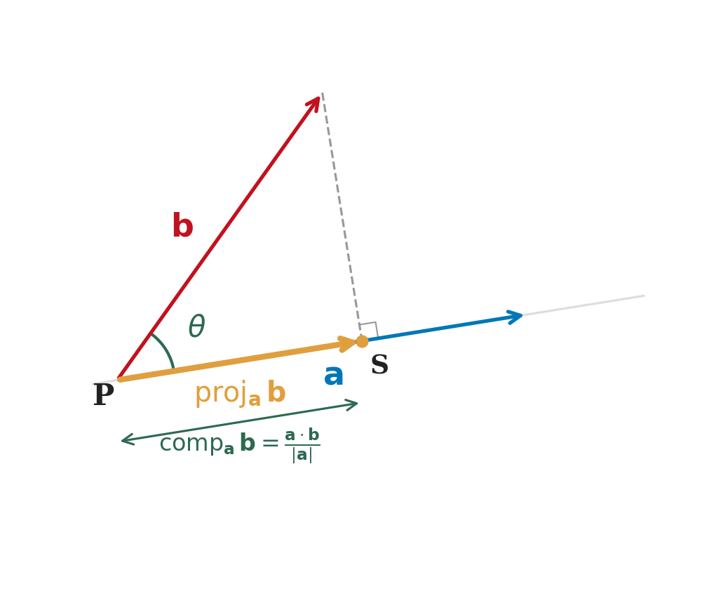
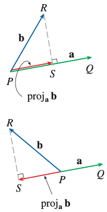
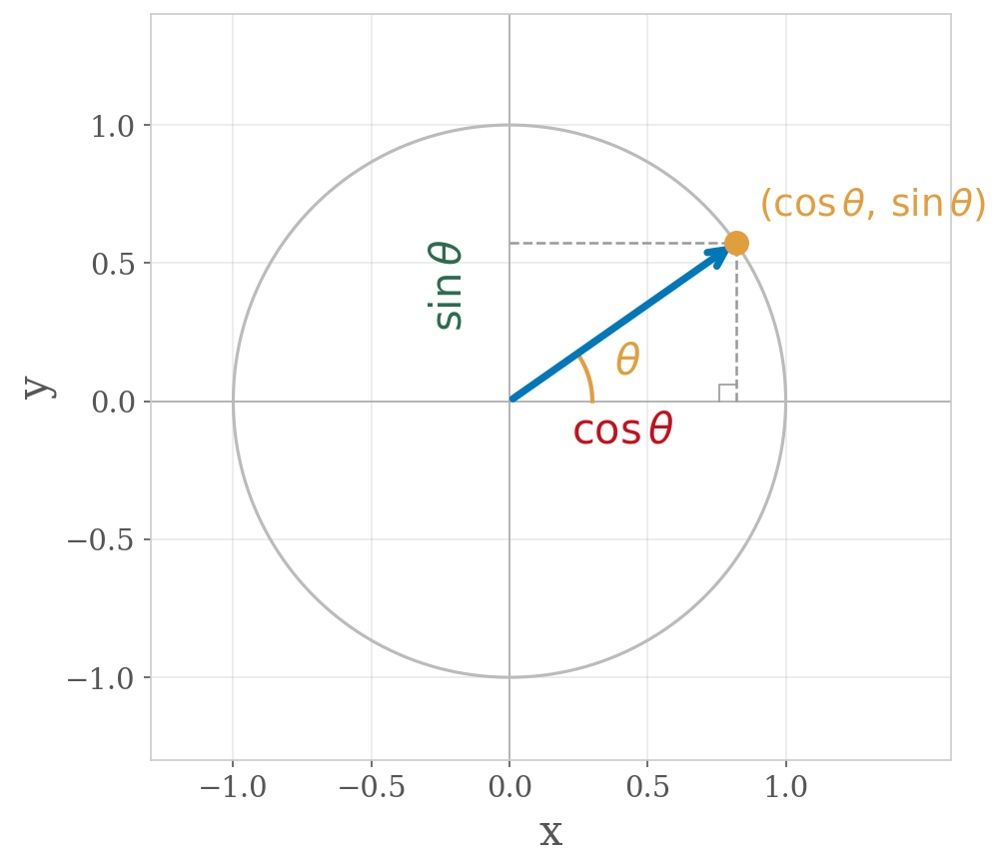

Section 12.3: The Dot Product
Vectors and the Geometry of Space
MTH 310
Calculus III
The Dot Product
We can add vectors and scale them. But can we "multiply" two vectors?
The dot product takes two vectors and gives a scalar (a number).
Dot Product
If \(\vec{a} = \langle a_1, a_2, a_3 \rangle\) and \(\vec{b} = \langle b_1, b_2, b_3 \rangle\), then
\[\vec{a} \cdot \vec{b} = a_1 b_1 + a_2 b_2 + a_3 b_3\]
Computing Dot Products
Example 1
Compute each dot product.
\(\langle 2, 4 \rangle \cdot \langle 3, -1 \rangle\)
\(\langle 2, 4 \rangle \cdot \langle 3, -1 \rangle = 2(3) + 4(-1) = 6 - 4 = 2\)
\(\langle -1, 7, 4 \rangle \cdot \langle 6, 2, -\tfrac{1}{2} \rangle\)
\(\langle -1, 7, 4 \rangle \cdot \langle 6, 2, -\tfrac{1}{2} \rangle = -6 + 14 - 2 = 6\)
\((\vec{i} + 2\vec{j} - 3\vec{k}) \cdot (2\vec{j} - \vec{k})\)
\(\langle 1, 2, -3 \rangle \cdot \langle 0, 2, -1 \rangle = 0 + 4 + 3 = 7\)
Properties of the Dot Product
Properties
- \(\vec{a} \cdot \vec{a} = |\vec{a}|^2\)
- \(\vec{a} \cdot \vec{b} = \vec{b} \cdot \vec{a}\) \quad (commutative)
- \(\vec{a} \cdot (\vec{b} + \vec{c}) = \vec{a} \cdot \vec{b} + \vec{a} \cdot \vec{c}\) \quad (distributive)
- \((c\,\vec{a}) \cdot \vec{b} = c(\vec{a} \cdot \vec{b}) = \vec{a} \cdot (c\,\vec{b})\)
- \(\vec{0} \cdot \vec{a} = 0\)
These follow directly from the component definition. Property 1 is especially useful — it connects the dot product to length.
The Geometric Meaning — Angles
Geometric Form of the Dot Product
If \(\theta\) is the angle between \(\vec{a}\) and \(\vec{b}\) (with \(0 \leq \theta \leq \pi\)), then
\[\vec{a} \cdot \vec{b} = |\vec{a}|\,|\vec{b}|\cos\theta\]

This connects algebra (the component formula) with geometry (the angle between vectors)!

Example: Finding the Angle Between Vectors
Example 2
Find the angle between \(\vec{a} = \langle -1, 3, 4 \rangle\) and \(\vec{b} = \langle 5, 2, 1 \rangle\).
\(\vec{a} \cdot \vec{b} = (-1)(5) + (3)(2) + (4)(1) = -5 + 6 + 4 = 5\)
\(|\vec{a}| = \sqrt{1 + 9 + 16} = \sqrt{26}\), \enspace \(|\vec{b}| = \sqrt{25 + 4 + 1} = \sqrt{30}\)
\(\cos\theta = \dfrac{5}{\sqrt{26}\,\sqrt{30}} = \dfrac{5}{\sqrt{780}}\)
Orthogonality
Orthogonal Vectors
Two vectors \(\vec{a}\) and \(\vec{b}\) are orthogonal (perpendicular) if and only if
\[\vec{a} \cdot \vec{b} = 0\]
Why? Because \(\cos 90{^\circ} = 0\), so \(\vec{a} \cdot \vec{b} = |\vec{a}|\,|\vec{b}| \cdot 0 = 0\).
| Sign of \(\vec{a} \cdot \vec{b}\) | Angle between vectors |
|---|---|
| \(\vec{a} \cdot \vec{b} > 0\) | Acute (\(\theta < 90{^\circ}\)) |
| \(\vec{a} \cdot \vec{b} = 0\) | Right angle (\(\theta = 90{^\circ}\)) |
| \(\vec{a} \cdot \vec{b} < 0\) | Obtuse (\(\theta > 90{^\circ}\)) |

Your Turn — Orthogonality Check
Example 3
Are \(\vec{u} = \langle 2, 1, -1 \rangle\) and \(\vec{v} = \langle 1, -1, 1 \rangle\) orthogonal?
\(\vec{u} \cdot \vec{v} = 2(1) + 1(-1) + (-1)(1) = 2 - 1 - 1 = 0\)
Projections
How much of \(\vec{b}\) points in the direction of \(\vec{a}\)?

Scalar and Vector Projections
Scalar projection (component of \(\vec{b}\) onto \(\vec{a}\)):
\[\text{comp}_{\vec{a}}\,\vec{b} = \frac{\vec{a} \cdot \vec{b}}{|\vec{a}|}\]
This is a number — the signed length of the shadow.
Vector projection of \(\vec{b}\) onto \(\vec{a}\):
\[\text{proj}_{\vec{a}}\,\vec{b} = \frac{\vec{a} \cdot \vec{b}}{|\vec{a}|^2}\,\vec{a}\]
This is a vector — the actual shadow vector along \(\vec{a}\).


Example: Computing Projections
Example 4
Find the scalar and vector projections of \(\vec{b} = \langle 12, 1, 2 \rangle\) onto \(\vec{a} = \langle -1, 4, 8 \rangle\).
\(\vec{a} \cdot \vec{b} = (-1)(12) + (4)(1) + (8)(2) = -12 + 4 + 16 = 8\)
\(|\vec{a}| = \sqrt{1 + 16 + 64} = \sqrt{81} = 9\)
\(\text{comp}_{\vec{a}}\,\vec{b} = \dfrac{8}{9}\)
Work — A Physical Application
When force is aligned with motion: \(W = |\vec{F}| \cdot |\vec{D}|\)
When force is at an angle \(\theta\) to the motion:

Example 5
A wagon is pulled 100 m by a force of 70 N applied at \(35{^\circ}\) above horizontal. Find the work done.

\(\vec{F} = 70\langle \cos 35{^\circ},\, \sin 35{^\circ} \rangle\), \enspace \(\vec{D} = \langle 100, 0 \rangle\)
Your Turn — Work
Example 6
A box is pushed 5 m along the floor by a 40 N force applied at \(20{^\circ}\) below horizontal. Find the work done.
The horizontal component of the force does the work: